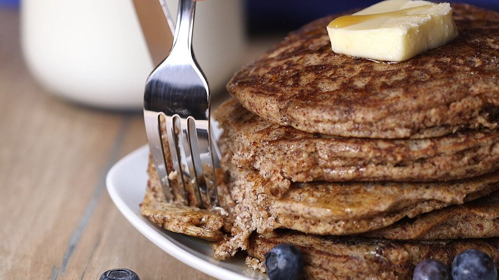

口コミ
想像した声
以下は制作側の創作で、実在のお客様の投稿ではありません。実際の口コミはお店のご確認のうえ掲載します。
イメージ例Instagramでお店の投稿を見てみたいです。どら焼きとアップルパイのお店だと分かり、どんなお菓子が並んでいるのか気になっています。
イメージ例お店のページをのぞいてみたい、と感じました。Instagramの投稿が楽しみです。
イメージ例アップルパイとどら焼き、どちらから気になるか考えながら、Instagramをのぞいてみたくなりました。
ギャラリー(イメージ)
写真



写真はフリー素材のイメージです。お店のものではありません。